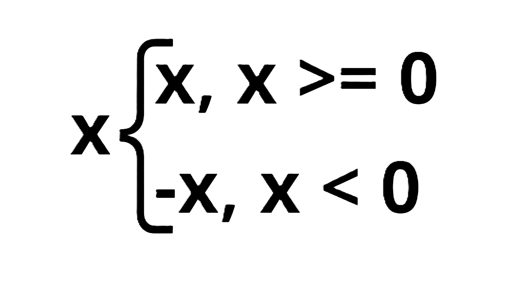
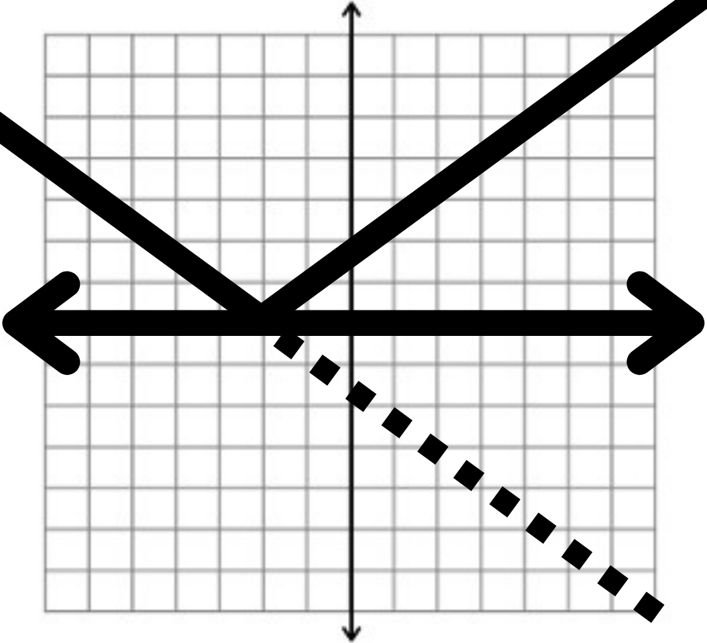

| Função Modular | Progressão Aritmética | Progressão Geométrica |
A única característica que determina se a função é uma função modular é o uso do módulo dentro da equação. Mesmo se houver logaritmo, exponentes, múltiplicação, fração, fatorial ou outros elementos, caso um módulo abrigue em si essas expressões, a função é considerada modular.
Um módulo é rpresentado por um traço que contém um número ou uma expressão "| x |". Quando você emprega o módulo em uma expressão, o valor retornado é o valor absoluto que havia sido aplicado no módulo, ou seja, o número sempre retornarará "positivo" ( caso estiver positivo, continua da mesma maneira, do contrário, multiplicamos por -1).
Então, como é representado o gráfico da função modular? Um gráfico de função modular pode ser interpretado como um gráfico com um espelho no eixo x quando a função é feita apenas de elementos dentro do módulo. Se houver algum elemento a mais no módulo, o eixo do "espelho" move de acordo. Por exemplo, na equação "|x| + 3", o eixo do espelho se move 3 números pra cima. No caso da equação "|x + 3|", o gráfico se move 3 números para a esquerda.
